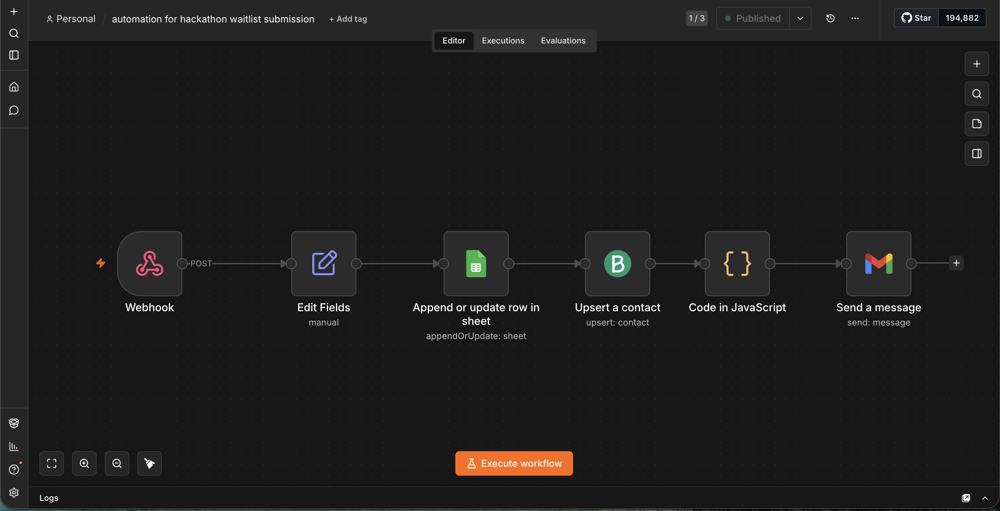
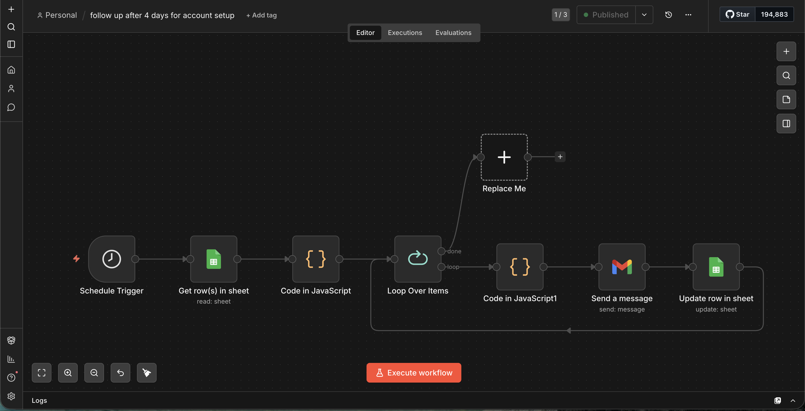

Newsletter & Onboarding Funnels
A family of webhook-driven funnels — newsletter signup, hackathon waitlist, account-setup reminders, new-user onboarding, and paced follow-ups — that capture leads, sync CRM, and nurture them automatically.

01Overview
A set of lifecycle funnels that turn form and popup submissions into CRM contacts and nurtured leads — newsletter signup, hackathon waitlist, new-user dashboard onboarding, account-setup reminders, and a paced daily follow-up sender — all dedup-safe and hands-off.
02Business problem
Leads arrived from multiple entry points (website popup, forms, dashboard signup) and were captured inconsistently, with manual follow-up and duplicate records. The team needed every entry point to reliably capture, sync, and nurture leads automatically.
03Architecture
04Workflow
05Screenshots




06AI components
- None — these are deterministic lifecycle funnels; reliability and dedup matter more than generation here (AI-personalized onboarding is covered in the separate Candidate Feedback case).
07Integrations
- Webhooks (Webflow popup + forms).
- HubSpot (upsert + static lists).
- Brevo (contact upsert).
- Gmail/SMTP (welcome + follow-up emails).
- Google Sheets (roster + status).
- QuickChart (referral QR, where used).
08Technical challenges
- Dedup across many entry points (search-by-email, update-or-create) so no contact or email duplicates.
- Pacing outbound (a capped 20 emails/day sender with 60–120s delays) to protect deliverability.
- Status flows (Not-yet → Draft → Sent → Error) so a failure is visible, not silent.
09Reliability engineering
- Deployment: multiple self-hosted funnels — webhook-triggered captures + scheduled senders/reminders.
- Monitoring: status columns per contact across every funnel.
- Error handling: append-or-update guards prevent duplicates; Wait nodes pace sends.
- Validation: email-exists checks before CRM writes.
- Scalability: each funnel is independent and idempotent, so entry points scale without interfering.
10Business impact
11Lessons learned
Idempotent, dedup-safe capture is the unglamorous foundation of lifecycle automation — get it wrong and every downstream email compounds the mess.
12Future improvements
- Double opt-in for the newsletter.
- A unified suppression list across funnels.
- Slack alerts on capture failures.